Rasgulla Recipe (Soft & Spongy)
I am so excited to share my delightfully spongy rasgulla recipe (also known as rosogolla, roshogollah or rasbari ) with you today. This popular Bengali dessert is beloved across the South Asian diaspora! Soft round dumplings made from chenna (an Indian cottage cheese) and semolina flour are simmered in a cardamom and rosewater scented sugar syrup for a tasty sweet that is simply lovely.
How to Make Rasgulla
While this recipe isn’t particularly difficult, there are quite a few steps involved. I have divided the rasgulla recipe into four parts for ease of reading:
*Making chenna
*Making rasgulla balls
*Preparing sugar syrup
*Cooking rasgulla
On a side note, I kneaded the chenna and cooked the sugar syrup simultaneously to save time. You can opt to prepare the chenna balls first and then make the sugar syrup if you are feeling overwhelmed.
1. Take 1 litre of whole milk in a pan and bring it to a low boil on a low to medium heat.
2. While the milk is heating up, line a mesh strainer or colander with a piece of cheese cloth or muslin.
3. Keep stirring the milk at intervals. This will help to prevent froth from forming on top and the base from scorching.
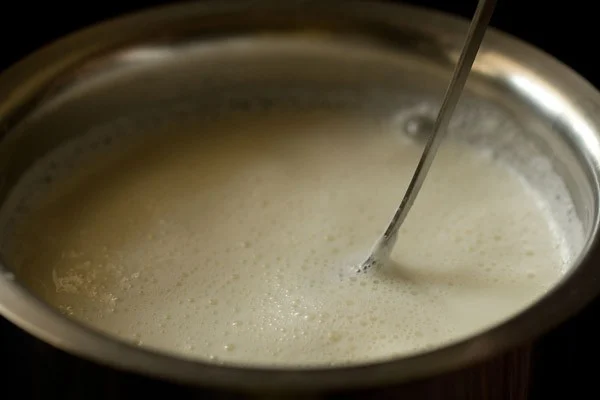4. When the milk comes to a boil, then reduce the heat to its lowest. Add 1 to 3 tablespoons of lemon juice.
Start with just 1 tablespoon of lemon juice and stir very well. If the milk has not curdled completely, then add more. Keep the lemon juice handy so you can add it as needed.
5. As soon as the milk curdles, switch off the heat. The milk should curdle completely and you should see a green watery whey.
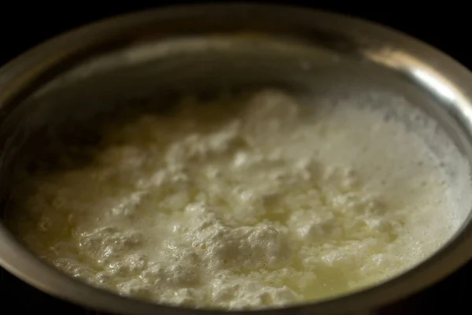6. Now pour the curdled milk in the cheese cloth/muslin lined strainer or bowl.
7. Gather the muslin from the sides and rinse the chenna or coagulated milk solids very well in running water.
This brings down the temperature of chenna as well as removes the lemony flavor and tangy taste from the chenna.
8. Now squeeze the muslin with your hands very well so that excess water is drained from the chenna.
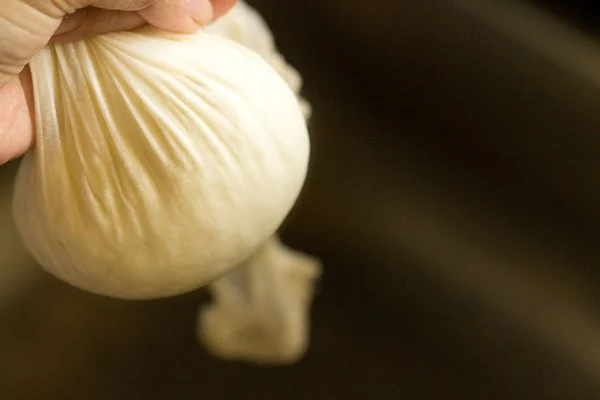9. Place a heavy weight on the chenna for 7 to 8 minutes, or hang it for about 30 minutes.
10. After the chenna is thoroughly drained, remove the cheesecloth. It should not have too much moisture nor be too dry. The texture below is just right!
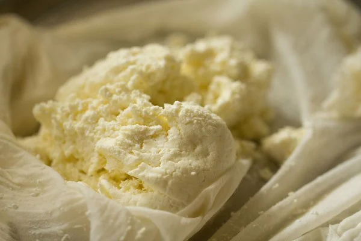Make Rasgulla Balls
11. Add 1 teaspoon unroasted sooji, rava or semolina. The rava I had was coarse, but a finer one will also work well.
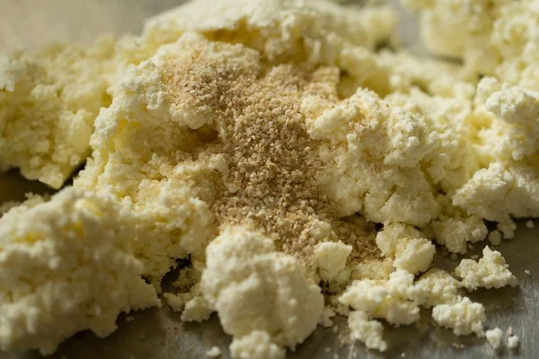12. First mix the sooji with chenna and then begin to knead.
If you see that the chenna is watery, then you have a bit too much water. You can add some maida (all purpose flour) so that extra moisture is absorbed.
Alternatively, keep a heavy weight on the chenna again so that the extra water or whey gets drained.
If the chenna looks crumbly and dry, then this means that you need some more moisture. To correct this, sprinkle 1 to 2 teaspoons of water while kneading.
13. With the heels of your palms, mash the chenna and knead. Keep on collecting the chenna from the sides and continue to mash and knead.
This kneading process is very important and also decides the texture of chenna. When you feel your palms becoming a bit greasy, it is time to stop.
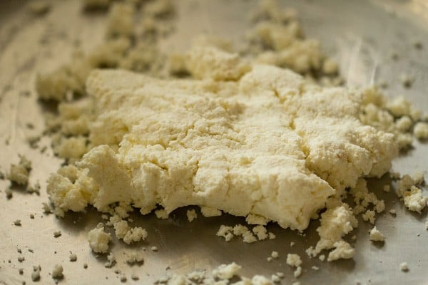Just a bit of greasiness is required. Avoid kneading to an extent where the whole chenna becomes greasy.
I kneaded for about 10 minutes as I have very light hands. Depending on the quality of chenna and the pressure you apply while kneading, you can take more or less time.
14. Knead to a smooth ball of chenna which should be able to come together without breaking or falling apart.
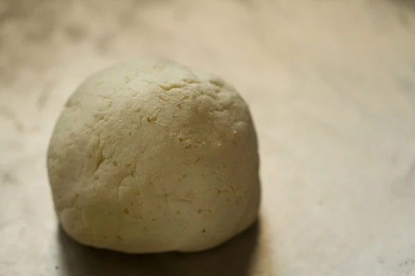15. A close up photo showing you the texture of the chenna dough.
16. Now pinch small portions from the chenna and roll them between your palms to a smooth round ball.
17. Prepare all small balls this way. There will be some fine cracks on the chenna balls. Don’t worry! This is normal.
18. Cover all the chenna balls with a moist muslin or kitchen towel and keep aside.
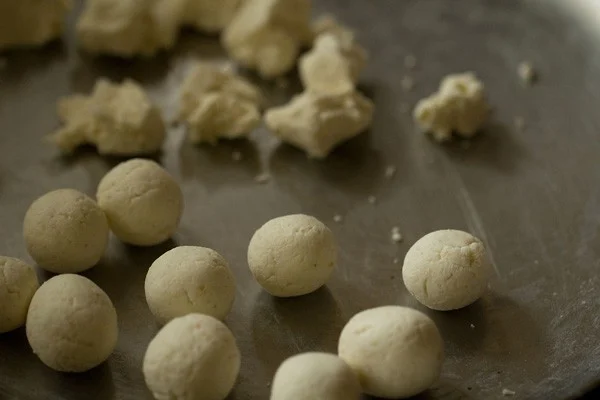Make Sugar Syrup
19. In a large pot, take 2 cups sugar.
20. Add 4 cups water (1 litre). Be sure to use a large pot or pan so that there is enough space for the rasgulla to cook and increase in size. You can also use a stovetop pressure cooker.
I used a pot measuring 8.5 inches in diameter and 4.5 inches in height, roughly 3.5 litres.
21. Heat the sugar solution on the stovetop over medium heat, stirring so the sugar dissolves. You don’t need to boil the solution.
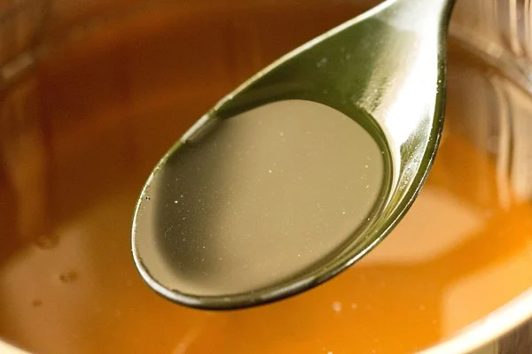22. Add 1 tablespoon of milk and stir. Adding milk helps in removing impurities.
If there are no impurities, then you don’t need to add milk and may directly proceed to step 25.
23. Once the sugar solution becomes hot, the impurities begin to float on the top.
24. You can either remove them with a spoon…
Or choose to strain the impurities in a cheese cloth/muslin lined strainer. I prefer this method.
25. Reserve ½ cup of sugar solution to add later while cooking the rasgulla.
26. Reserve another 1 cup of the filtered sugar solution in a serving bowl.
27. Add the rest of the sugar solution (approximately 2.5 cups) back to the same large pot and bring it to a boil on a medium high heat.
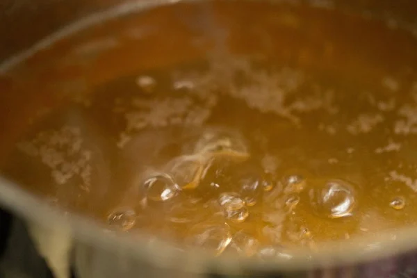Cook Rasgulla
28. Gently slide the rasgulla balls into the sugar solution.
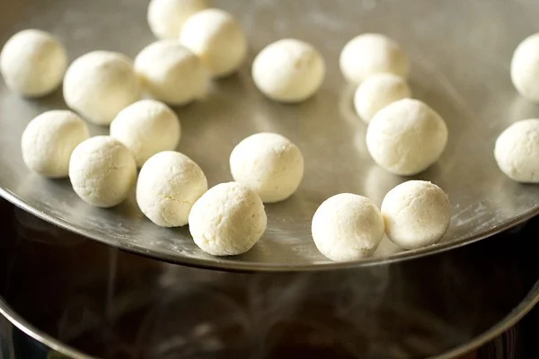29. Once all the rasgulla have been added to the sugar solution, gently shake the pot. Don’t stir the rasgulla with a spoon.
30. Cover immediately with a lid and let them cook. Keep the heat to a medium or medium high.
31. After 4 minutes, open the lid and add ¼ cup of the reserved sugar solution. Shake the pot.
32. Cover again and continue to cook.
33. After 4 minutes, again add ¼ cup of the reserved sugar solution. Cover and again cook for 2 minutes.
In total, the rasgulla balls cooked for about 10 minutes. After 10 minutes, they had increased in size and were done.
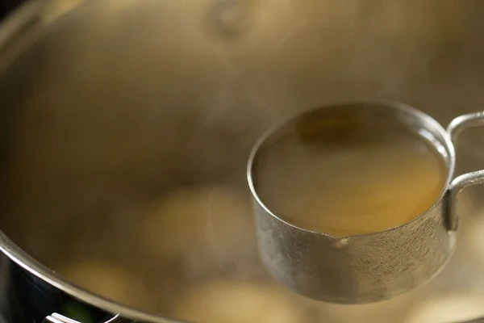How to Know When Rasgulla Are Done
34. You have to check the doneness while the rasgulla are simmering. Once the rasgulla are cooked through, switch off the heat and keep the pot down.
The time to cook rasgulla will vary depending on the thickness and quality of pot; the size of pot; and the intensity of the heat.
The time range can be somewhere between 7 to 11 minutes. So you can add the ¼ cup sugar syrup after 2 to 3 minutes also instead of 4 minutes.
I used a thick bottomed wide and deep pot, so the cooking time was slightly more for me.
35. There are two ways to check the doneness of rasgulla.
First method is to place the rasgulla in a bowl or cup of water. If the rasgulla sinks to the bottom and stays there, its cooked.
Second method is to press a small portion of the rasgulla with your finger. If the pressed portion bounces back to its original shape, its done.
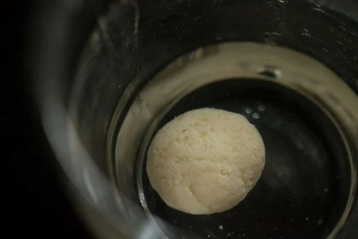Soaking Rasgulla in Sugar Syrup
36. Once they are cooked, take each rasgulla with a spoon.
37. Place it in the serving bowl containing the reserved 1 cup of sugar solution. Cover and keep aside.
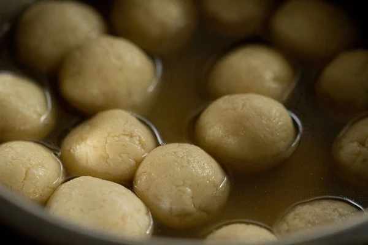38. Let the sugar solution in which the rasgulla were cooked cool to a warm temperature. Then add this sugar solution to the serving bowl containing the rasgulla.
39. Once the whole mixture has cooled down, add 1 to 2 tablespoons of rosewater. Stir gently. Allow them to soak in the syrup for about 30 minutes, so that the flavors infuse the rasgulla.
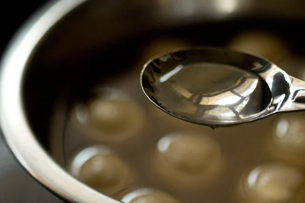